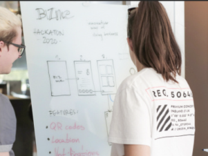

Web developer specializing in bringing your designs to life using Webflow
VIEW MORE
TIMELINE
PROJET
20
15
Lycée des horizons
BAC SCIENTIFIQUE
SPECIALITE PHYSIQUE CHIMIE OPTION SVT
Laboratoire Huber Curien
PREMIER STAGE INFORMATIQUE: ENQUETEUR SONDAGE IA
20
17
20
19
Université Grenoble Alpes
LICENCE
MIAGE
Laboratoire Huber Curien
PREMIER STAGE INFORMATIQUE:ENQUETEUR SONDAGE IA
20
17
Because working is doing things, things is getting better.
TIMELINE
PROJET
JAVA
PROLOG
logic_programming_parsing_ai
parsing and ai with prolog
Prolog
Updated on Dec 17 2018
dynamic_string
parsing and with prolog
Prolog
Updated on Dec 17 2018
logic_programming_parsing_ai
parsing and ai with prolog
Prolog
Updated on Dec 17 2018
Being human is being alive.
BACK TO RESUME
DEVELOPMENT
INVESTMENT
10 min read
Building Your Startup’s Software Product With DECODE
We’re more than a tightknit team of skilled developpers - we’re partners and visionaries in realizing your goals.

12 min read
How to Develop a User-Friendly App
Have you ever considered how amazing it is that the iPhone a powerful and complex device that can rival a desktop computer, doesn’t come ...